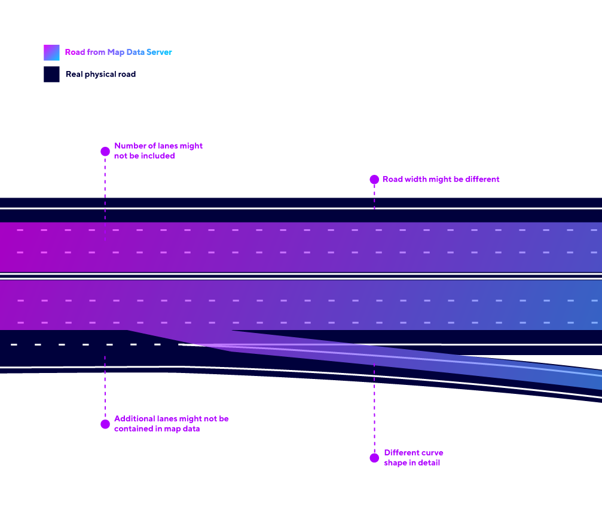
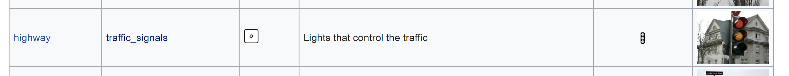
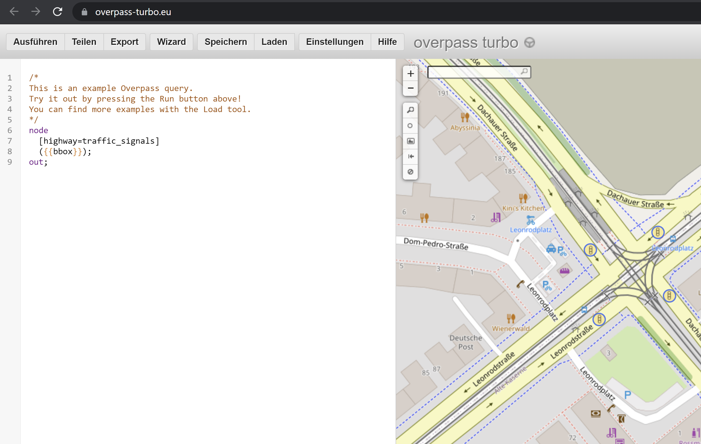

holoride Maps Service
The Elastic SDK comes with a complementary Maps Service to provide Map Tiles. These provide details of where roads are in the real world, as well as a service to provide POIs (buildings, sites, forests, etc.) using the Open Street Maps Overpass API.
Open Street Maps
holoride’s map service is based on Open Street Maps. When creating holoride experiences you must be aware of the limitations of the map database.
Map Accuracy
The map database available through the Elastic SDK has the same accuracy as maps found on standard navigation systems. This map data does not contain all the physical information known from the real world (number of lanes, the exact width of the road, etc.).
This is something you have to be aware of. If you find yourself “off-road” in your VR experience, this is most likely not caused by incorrect positioning / GPS error, but by a road not being as wide as it is in the real world, for example.
You must consider this when creating experiences - please plan in some spare space around the roads and choose your visual road representation carefully to provide passengers with a consistent/immersive experience.

At a certain point, there’s no getting around real-world testing. It lets developers see how experiences take shape in VR while taking a holoride. Testing is simple with our DevKit and a driver, the passenger-developer can compare their efforts against real-world travel.
Map Coverage
Open Street Maps is a community-based database, which means it has good coverage. However, there is no guarantee that the database contains every road on the planet. Also, not every road that you will see might actually be drivable or accessible to the public.
Altitude Information
Our current map database does not contain altitude information. Extensive tests showed that this does not affect immersion in most cases if you design your experience on flat ground. One thing you still have to keep in mind is that the map representation of tunnels, bridges, and junctions will therefore be similar to the missing altitude information. The Elastic SDK sets the HoloridePlayer Prefab to ground level (altitude = 0 / y=0 in Unity), even though you might be driving on a high mountain or in a deep valley in the real world.
**Note: The perception sensitivity of altitude changes is very low. **
POIs / Overpass API
To make POIs usable in our SDK (i.e. all the point-based items like gas stations and famous sights to park benches) they are utilized in the Open Street Maps’ Overpass service, which contains a vast number of different POIs. Overpass comes with its own query language to specifically request detailed information on certain key value pairs in the Open Street Maps database. Nodes like OSMPositions, RoadNetworkPoses, BuildingSpawner, and RoadNetworkSpawner utilize Overpass queries to receive their underlying data.
Example workflow to develop using Overpass
This chapter gives you an overview over our recommended workflow using Overpass. For explanation purposes we’ll follow the following example use case:
Your game should spawn objects on all positions, where traffic lights are in the real world.
Overview on existing key value pairs
First look what’s the key value pair of your desired POI (in our example case: traffic lights). We recommend using this website as a reference point: https://wiki.openstreetmap.org/wiki/Map_features

For our example you can find out that key = “highway” and value = “traffic_signals”.
Test your query using e.g. Overpass Turbo
Next step is to test the key value pair using a visual tool We recommend using this website to test your query before using it in the Elastic SDK: https://overpass-turbo.eu/

Integrate your query in the Elastic SDK
Last step - you can integrate your query using the OSM Node Positions node of the Elastic SDK. Simply type in the key value pair in brackets like in the step before (e.g. [highway=traffic_signals]
Further information
- Overpass API - In detail documentation for the Overpass API
- How To: OSM Poses - In-depth article about OpenStreetMap queries